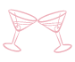

블랙커피입니다. 되게 쓰니까
많이 드시지 마세요.
블랙커피입니다. 되게 쓰니까
많이 드시지 마세요.블랙커피입니다. 되게 쓰니까
많이 드시지 마세요.
칵테일입니다. 분위기있는 곳에서 친구나 연인과 즐기세요.
녹차입니다. 녹차는 건강에 좋고 심신을 차분하게 해주는 기능이 있습니다. 우리 매장의 녹차는 국산 녹차를 사용해서 좀 더 깊은 맛을 느낄 수 있습니다. 많은 애용 바랍니다.
하늘빛깔 음료수입니다. 잘 저어서 드세요.
적색빛을 띠는 음료수입니다. 잘 저어서 드세요.
레몬에이드에요. 시고도 달달한 음료수에요. 시원하게 해서 드시면 좋을 거 같아요.
녹차입니다. 녹차는 건강에 좋고 심신을 차분하게 해주는 기능이 있습니다. 우리 매장의 녹차는 국산 녹차를 사용해서 좀 더 깊은 맛을 느낄 수 있습니다. 많은 애용 바랍니다.녹차입니다. 녹차는 건강에 좋고 심신을 차분하게 해주는 기능이 있습니다. 우리 매장의 녹차는 국산 녹차를 사용해서 좀 더 깊은 맛을 느낄 수 있습니다. 많은 애용 바랍니다.녹차입니다. 녹차는 건강에 좋고 심신을 차분하게 해주는 기능이 있습니다. 우리 매장의 녹차는 국산 녹차를 사용해서 좀 더 깊은 맛을 느낄 수 있습니다. 많은 애용 바랍니다.녹차입니다. 녹차는 건강에 좋고 심신을 차분하게 해주는 기능이 있습니다. 우리 매장의 녹차는 국산 녹차를 사용해서 좀 더 깊은 맛을 느낄 수 있습니다. 많은 애용 바랍니다.녹차입니다. 녹차는 건강에 좋고 심신을 차분하게 해주는 기능이 있습니다. 우리 매장의 녹차는 국산 녹차를 사용해서 좀 더 깊은 맛을 느낄 수 있습니다. 많은 애용 바랍니다.녹차입니다. 녹차는 건강에 좋고 심신을 차분하게 해주는 기능이 있습니다. 우리 매장의 녹차는 국산 녹차를 사용해서 좀 더 깊은 맛을 느낄 수 있습니다. 많은 애용 바랍니다.녹차입니다. 녹차는 건강에 좋고 심신을 차분하게 해주는 기능이 있습니다. 우리 매장의 녹차는 국산 녹차를 사용해서 좀 더 깊은 맛을 느낄 수 있습니다. 많은 애용 바랍니다.녹차입니다. 녹차는 건강에 좋고 심신을 차분하게 해주는 기능이 있습니다. 우리 매장의 녹차는 국산 녹차를 사용해서 좀 더 깊은 맛을 느낄 수 있습니다. 많은 애용 바랍니다.